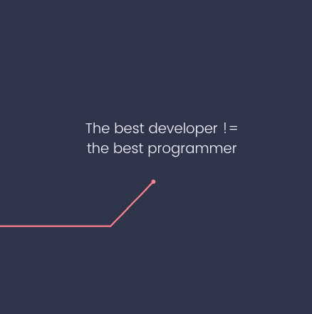

What developers often prioritize:
- Learning the latest framework
- Writing perfect code
- 100% test coverage
- Optimizing code for speed and performance
What will make your career take off as a developer:
- Immerse yourself in the domain where your software resolves issues
- Craft a video that showcases the latest feature you've developed (your sales team will thank you)
- Write the marketing copy for the feature you just worked on
- Deepen your understanding of the domain even further
- Participate in a sales call
- Talk to a user
- Resolve a support ticket
- Observe how users interact with your feature post-launch, and iterate accordingly
Notice any patterns? One approach focuses on enhancing your ability to address business or user needs.
The alternative zeros in on refining coding skills. While code is a vital tool to solve problems, it isn't the ultimate objective.
The best developer != the best programmer